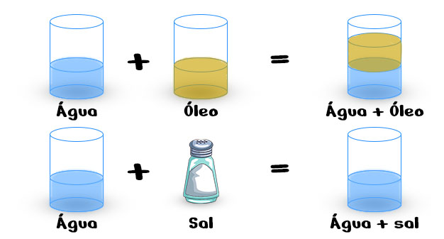
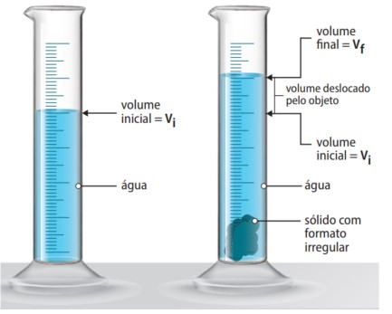

Química 1ª Série
Aula 02: Substâncias e Misturas
O conteúdo desta Aula foi elaborado com base no Livro:
Substâncias são formadas por agrupamentos de átomos ou moléculas que podem ser iguais ou diferentes. Moléculas podem ser formadas pela ligação entre dois ou mais átomos.
Substâncias formadas por um único elemento químico são denominadas substâncias simples;
Substâncias formadas por formadas por dois ou mais elementos são denominadas substâncias compostas.
Fonte: http://gtpinto.blogspot.com
Fonte: http://gtpinto.blogspot.com
Quando diferentes substâncias se misturam, elas podem ser miscíveis ou não. Caso sejam miscíveis, a mistura formada por elas é classificada como mistura homogênea; caso contrário, é classificada como mistura heterogênea;
Como é possível identificar uma mistura homogênea ou heterogênea sem saber se as substâncias que a compõem são miscíveis?

Fonte: https://vaiquimica.com.br/
As misturas podem ser separadas por meio de diferentes processos, que dependem das características dos materiais misturados. Alguns fatores físicos e químicos são determinantes para as separações, como tamanho das partículas, temperaturas de ebulição e fusão, e principalmente a densidade.
Densidade é uma propriedade da matéria que relaciona a massa (m) e o volume (V) através da razão \(d=\frac{m}{v}\). No Sistema Internacional de Unidades (SI), a unidade de medida da densidade é \(kg/m^3\), na qual a massa é expressa em quilograma (kg) e o volume em metros cúbicos (m3).
Podemos utilizar como unidade de medida de volume o mililitro (mL), que é a capacidade equivalente a 1 centímetro cúbico (\(cm^3\)), e o grama como unidade de massa, de modo que a unidade de medida da densidade seja \(g/mL\), que é equivalente a \(g/cm^3\).

Catação: método que utiliza as mãos ou um artefato para separar componentes de diferentes tamanhos de uma mistura heterogênea formada por sólidos ou sólido e líquido.
Peneiração: método em que uma mistura heterogênea formada por sólidos ou por um sólido e um líquido atravessa uma peneira.
Ventilação: método que utiliza a força do vento para separar o componente de maior densidade de uma mistura heterogênea formada por sólidos.
Levigação: método que utiliza a força de um líquido para separar o componente de maior densidade de uma mistura heterogênea formada por sólidos.
Flotação: método em que um gás é adicionado a uma mistura formada por um sólido e um líquido para haver interação entre um deles e as bolhas e, posteriormente, a separação.
Separação magnética: método que utiliza um ímã para atrair o componente metálico de uma mistura.
Decantação: método que utiliza a diferença de densidade e ausência de solubilidade para separar os componentes de uma mistura heterogênea formada por líquidos ou sólido e líquido.
Centrifugação: é o método que utiliza uma centrífuga para acelerar a decantação;
Dissolução fracionada: método em que um líquido é adicionado a uma mistura heterogênea de sólidos com o objetivo de dissolver um deles.
Filtração simples: método em que uma mistura heterogênea formada por um sólido e um líquido atravessa um filtro para que haja a separação dos componentes.
Filtração a vácuo: método em que uma mistura heterogênea formada por um sólido e um líquido atravessa um filtro, caindo em um recipiente com vácuo.
Cristalização fracionada: método em que os diferentes solutos dissolvidos em um solvente são separados à medida que o solvente sofre evaporação. Esse método baseia-se na diferença de solubilidade.
Fusão fracionada: método em que aquecemos uma mistura homogênea formada por sólidos para separar os componentes em razão dos diferentes pontos de fusão;
Sublimação fracionada: método em que aquecemos uma mistura homogênea formada por sólidos, sendo um deles sublimável.
Destilação simples: método em que aquecemos uma mistura homogênea formada por sólido e líquido, sendo o líquido separado do sólido por vaporização seguida de condensação.
Destilação fracionada: método em que aquecemos uma mistura homogênea formada por líquidos para separá-los em razão dos diferentes pontos de ebulição.
Questão 02. Relacione o método de separação de misturas com a propriedade utilizada no processo de separação.
I. Decantação II. Destilação III. Extração por solvente
A. Solubilidade
B. Densidade
C. Temperatura de ebulição
Questão 03. Analise as afirmativas a seguir e julgue como verdadeiro (V) ou falso (F).
( ) Na filtração o sólido e o líquido são separados pela diferença do tamanho das partículas.
( ) A centrifugação é um processo de decantação acelerado pela força da gravidade.
( ) A separação na cromatografia é realizada pela interação dos componentes da mistura com a fase móvel e a fase estacionária.
destilação e decantação.
filtração e destilação.
destilação e coação.
extração e filtração.
extração e decantação.
filtração, decantação e destilação.
catação e decantação.
sublimação e destilação.
prensagem e decantação.
destilação e decantação.
filtração.
sedimentação.
sifonação.
centrifugação.
cristalização.
centrifugação.
sifonação.
decantação.
filtração.
destilação.
1)A evaporação permite a separação de dois líquidos bastante voláteis. 2)É possível a separação de um material homogêneo líquido-líquido por destilação fracionada. 3)A separação de componentes do petróleo é feita com base na diferença entre as respectivas temperaturas de ebulição. 4)O princípio da destilação fracionada fundamenta-se na diferença de solubilidade dos sólidos de um material.
A e B são miscíveis entre si; C é imiscível com A e com B; A é mais volátil que B. Com base nessas informações, os métodos mais adequados para separar os três líquidos são: